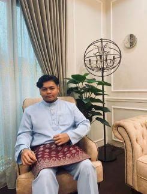

{kind=link}
.jpg)
.jpg)
.jpg)
"Throughout heaven and earth, I alone, am the honored one" -Satoru Gojo
Akmal Thaqif
My name is Muhammad Akmal Thaqif bin Adli. I was born on May 13th, 2004, which makes me 20 years old today. Right now, I continue my study at UiTM Rembau to finish my diploma in Information Management. I'm a semester 5 student, and this semester will be my last semester at UiTM Rembau. At Rembau, I stay at a rental house with my friends. We have a lot of spare time at the rental house because we only have classes for two days. Therefore, I spend my days doing what I think is fun since I like to spend my leisure time with my hobby.
My Favourites
Below is the list of my favourite video games that I often play during my leisure time:
Below is the list of my favourite food:
Below is the list of my favourite person:
Hobbies
My hobby is playing video games. Currently, I play mobile games with my friends since it is so fun to play together. Other than that, I also love to play single-player games, especially games with the genre of survival horror. Apart from that, I also like listening to music. Listening to a variety of music genres while jogging around the neighborhood is the best combination. On top of everything, life is good. I believe people should have a hobby to fill their leisure time.
Goals
My goal is to get rich and buy a house and a car. I just want to have a good carrier that can make me rich. The reason why I want to get rich is to buy anything for my parents without checking my balance in my credit card. Once I have all the money, I want to get married with my love ones as I am fully prepared to build my own family. Those who read this, pray for my success as I will pray for your success as well. :)
Facts About Me
My father is from Terengganu while my mother is from Selangor. Currently I live at Bandar Baru Bangi, Selangor. My parents have 5 children as I am the fourth child. I have two older brothers, one elder sister and one younger sister. My siblings above me have already married which makes me and my younger sister the only children that did not got married yet. To be honest, it's kind of a pressure for me as I watched my older siblings have already make their own family, knowing the fact that I was next in line. I get rid of that thought as I need to build my carrier first before having a family of my own.
Experience
I have lived for 20 years since I was born as I have experience quite a few events. Some happy and some tragic. My journey during my primary school and highschool is quite tough yet enjoyable at the same time. This is because, when I was at the primary school, I found it hard to make friends with my schoolmate as I live a bit far from the others. Moving to the highschool, I attented a boarding school as it was much more easier to bond with my schoolmate as we experience the same things together. In my opinion, highschool era was the best. After I finished my highschool, I attended some part time job before I continue my study in Rembau. It was quiete challenging as I entered the adulthood. I also went for the industrial training at Hospital Islam Az-Zahrah. Although I did not find it enjoyable, I do gain a lot of experience during my internship.
Some Well-known Place
Below is the map for my certain favourite place such as: